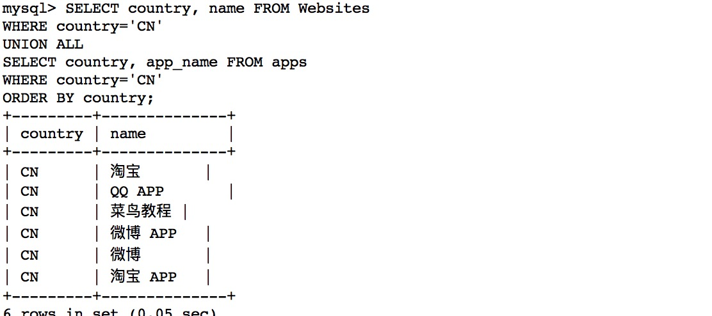

☰ 目录
18 MySQL UNION 操作符
本教程为大家介绍 MySQL UNION 操作符的语法和实例。
描述
MySQL UNION 操作符用于连接两个以上的 SELECT 语句的结果组合到一个结果集合中。多个 SELECT 语句会删除重复的数据。
语法
MySQL UNION 操作符语法格式：
SELECT expression1, expression2, ... expression_n
FROM tables
[WHERE conditions]
UNION [ALL | DISTINCT]
SELECT expression1, expression2, ... expression_n
FROM tables
[WHERE conditions];
参数
- expression1, expression2, ... expression_n: 要检索的列。
- tables: 要检索的数据表。
- WHERE conditions: 可选， 检索条件。
- DISTINCT: 可选，删除结果集中重复的数据。默认情况下 UNION 操作符已经删除了重复数据，所以 DISTINCT 修饰符对结果没啥影响。
- ALL: 可选，返回所有结果集，包含重复数据。
演示数据库
在本教程中，我们将使用 RUNOOB 样本数据库。
# 创建表
CREATE TABLE Websites(
id INT NOT NULL AUTO_INCREMENT,
name VARCHAR(100) NOT NULL,
url VARCHAR(40) NOT NULL,
alexa INT,
country VARCHAR(20),
PRIMARY KEY ( id )
)
ENGINE=InnoDB DEFAULT CHARSET=utf8;
# 插入数据
INSERT INTO Websites
(name, url, alexa, country)
VALUES
("Google", "https://www.google.cm/ ", 1, "USA");
INSERT INTO Websites
(name, url, alexa, country)
VALUES
("淘宝", "https://www.taobao.com/", 13, "CN");
INSERT INTO Websites
(name, url, alexa, country)
VALUES
("菜鸟教程", "https://www.runoob.com/", 4689, "CN");
INSERT INTO Websites
(name, url, alexa, country)
VALUES
("微博", "https://weibo.com/", 20, "CN");
INSERT INTO Websites
(name, url, alexa, country)
VALUES
("Facebook", "https://www.facebook.com/", 3, "USA");
# 这里为了使id 从7开始，指定id
INSERT INTO Websites
(id,name, url, alexa, country)
VALUES
(7, "Facebook", "https://www.facebook.com/", 3, "IND");
下面是选自 "Websites" 表的数据：
mysql> SELECT * FROM Websites;
+----+--------------+---------------------------+-------+---------+
| id | name | url | alexa | country |
+----+--------------+---------------------------+-------+---------+
| 1 | Google | https://www.google.cm/ | 1 | USA |
| 2 | 淘宝 | https://www.taobao.com/ | 13 | CN |
| 3 | 菜鸟教程 | http://www.runoob.com/ | 4689 | CN |
| 4 | 微博 | http://weibo.com/ | 20 | CN |
| 5 | Facebook | https://www.facebook.com/ | 3 | USA |
| 7 | stackoverflow | http://stackoverflow.com/ | 0 | IND |
+----+---------------+---------------------------+-------+---------+
先创建 "apps" 的表格；
# 创建表
CREATE TABLE apps(
id INT NOT NULL AUTO_INCREMENT,
app_name VARCHAR(100) NOT NULL,
url VARCHAR(40) NOT NULL,
country VARCHAR(20),
PRIMARY KEY ( id )
)
ENGINE=InnoDB DEFAULT CHARSET=utf8;
# 插入数据
INSERT INTO apps
(app_name, url, country)
VALUES
("QQ App", "http://im.qq.com/", "CN");
INSERT INTO apps
(app_name, url, country)
VALUES
("微博 App", "http://weibo.com/", "CN");
INSERT INTO apps
(app_name, url, country)
VALUES
("淘宝 App", "https://www.taobao.com/", "CN");
加入按行显示数据，如下：
mysql> select * from apps \G; # 注意这里的 \G 参数
*************************** 1. row ***************************
id: 1
app_name: QQ App
url: http://im.qq.com/
country: CN
*************************** 2. row ***************************
id: 2
app_name: 微博 App
url: http://weibo.com/
country: CN
*************************** 3. row ***************************
id: 3
app_name: 淘宝 App
url: https://www.taobao.com/
country: CN
3 rows in set (0.00 sec)
下面是 "apps" APP 的数据：
mysql> SELECT * FROM apps;
+----+------------+-------------------------+---------+
| id | app_name | url | country |
+----+------------+-------------------------+---------+
| 1 | QQ APP | http://im.qq.com/ | CN |
| 2 | 微博 APP | http://weibo.com/ | CN |
| 3 | 淘宝 APP | https://www.taobao.com/ | CN |
+----+------------+-------------------------+---------+
3 rows in set (0.00 sec)
SQL UNION 实例
下面的 SQL 语句从 "Websites" 和 "apps" 表中选取所有不同的country（只有不同的值）：
实例
SELECT country FROM Websites
UNION
SELECT country FROM apps
ORDER BY country;
执行以上 SQL 输出结果如下：

注释：UNION 不能用于列出两个表中所有的country。如果一些网站和APP来自同一个国家，每个国家只会列出一次。UNION 只会选取不同的值。请使用 UNION ALL 来选取重复的值！
SQL UNION ALL 实例
下面的 SQL 语句使用 UNION ALL 从 "Websites" 和 "apps" 表中选取所有的country（也有重复的值）：
实例
SELECT country FROM Websites
UNION ALL
SELECT country FROM apps
ORDER BY country;
执行以上 SQL 输出结果如下：

带有 WHERE 的 SQL UNION ALL
下面的 SQL 语句使用 UNION ALL 从 "Websites" 和 "apps" 表中选取所有的中国(CN)的数据（也有重复的值）：
实例
SELECT country, name FROM Websites
WHERE country='CN'
UNION ALL
SELECT country, app_name FROM apps
WHERE country='CN'
ORDER BY country;
执行以上 SQL 输出结果如下：
